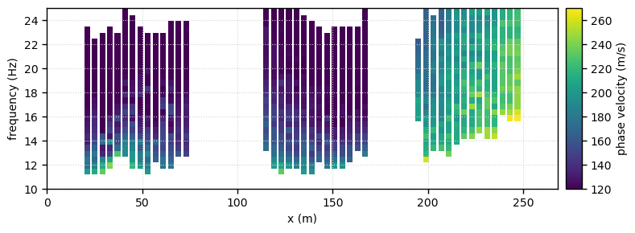

Real case: Mannsworth - MASW2D
This notebook implements a 2D MASW (Multichannel Analysis of Surface Waves) workflow based on a moving window approach.
Data comes from Barone et al. (2021)
[1]:
from pyswapp import *
/home/alberto/anaconda3/envs/pyswapp/lib/python3.9/site-packages/obspy/core/util/base.py:26: UserWarning: pkg_resources is deprecated as an API. See https://setuptools.pypa.io/en/latest/pkg_resources.html. The pkg_resources package is slated for removal as early as 2025-11-30. Refrain from using this package or pin to Setuptools<81.
import pkg_resources
[2]:
# directories
prj_dir = '../../data/real_data' # project directory
path2raw = os.path.join(prj_dir,'raw') # path to raw data
path2geom = f'{prj_dir}/Geometry_mannsworth.csv' # path to the geometry file
[3]:
# processing and plotting settings
settings = create_settings(fmin=5, fmax=30, # frequency range
vmin=10, vmax=500, velstep=1) # testing phase velocity range and step
[4]:
swam = MASW2DManager(f'{prj_dir}/proc/masw2D', # project directory path
path2raw=path2raw, # optional, copy & per default rename data from path (outside project directory)
path2geom=path2geom, # optional, copy geom from path (outside project directory)
settings=settings, # optional, define settings for visualisations and processing
rename = False, # optional, rename copied raw data to preferred filename format (Shotfile_<index>), default value is False!
overwrite = False, # optional, overwrite database .db file if it already exists --> create new project data base
)
Warning: Ignoring XDG_SESSION_TYPE=wayland on Gnome. Use QT_QPA_PLATFORM=wayland to run on Wayland anyway.
Creating project:
Copying raw data into project directory ..... 0.03 s
Copying geometry into project directory ..... 0.0 s
Reading seismic shot files ..... 14.85 s
Read 82 files and applied geometry and settings.
Existing procsets: raw proc1
Active procset label: proc1
[5]:
# offset in meters
dx = 2
min_offset = 2*dx
max_offset = 10*dx
w_len = 22
w_m = 2
# Run moving window along data
swam.moving_window(minoffset = min_offset, maxoffset = max_offset, wlen = w_len, wmove = w_m)
# remove traces of zero amplitude
swam.preprocess(type='check_traces')
Moving window along (SIN,REP) = (43, 2) ..... 23.39 s
Applying check_traces to (SIN,REP) = (43, 2) ..... 26.29 s
[6]:
# transform
tr_type = 'fdbf'
swam.transform(method = tr_type)
Applying fdbf transformation to (SIN,REP) = (43, 2) ..... 251.79 s
you can pick either in fdbf of FK
[8]:
# manual dc picking
swam.gui_interact('pick',
use_windows=True,
cmap = 'jet')
Loading the GUI ..... 6.01 s
[25]:
# smooth the DCs
swam.process_curves(type = 'smooth', method = 'FK')
Applying smooth to dispersion curve of (SIN,REP) = (43, 2) ..... 9.76 s
[27]:
# plot pseudosection
c_map = 'viridis'
fig,ax = plt.subplots(figsize=(8,3))
swam.plot('pseudosection', method = 'FK',
cmap = c_map, axes = ax,
vmin = 120, vmax = 270,
fmin = 10.0, fmax = 25,
width=3
)
fig.suptitle(f'min_offset = {min_offset}, max_offset = {max_offset}, method={tr_type}, wlen = {w_len}, wmove = {w_m}', fontsize=10)
fig.tight_layout(rect=[0, 0, 1, 0.95])
fig.savefig(f'{prj_dir}/proc/masw2D/04_figs/pseudo_masw2D_smooth.png', dpi=150)

[30]:
# save DCs
swam.save(method = 'FK', # tr_type
dc_mode = 0, apply_to = 'all', use_windows=True)
Save dispersion curves corresponding to (SIN,REP) = (43, 2) to "../data/real_data/proc/masw2D/03_proc/proc1_FK/Mode0" ..... 1.1 s
Comparing raw and smoothed dispersion curves
Here’s the pseudosection after picking

and this one after smoothing